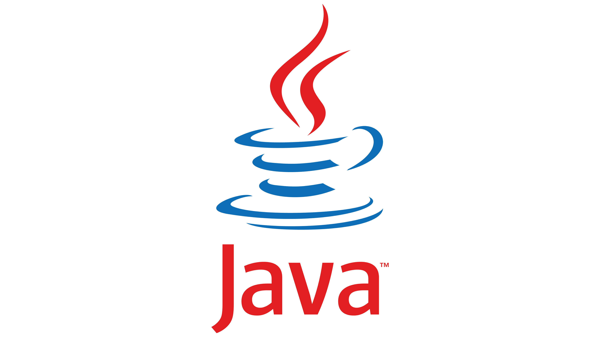
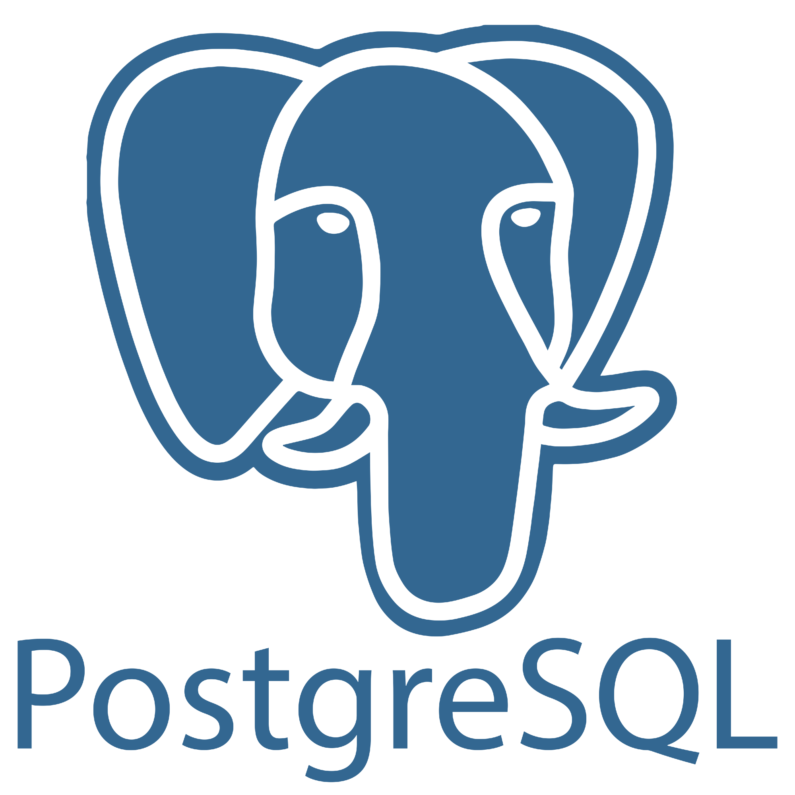
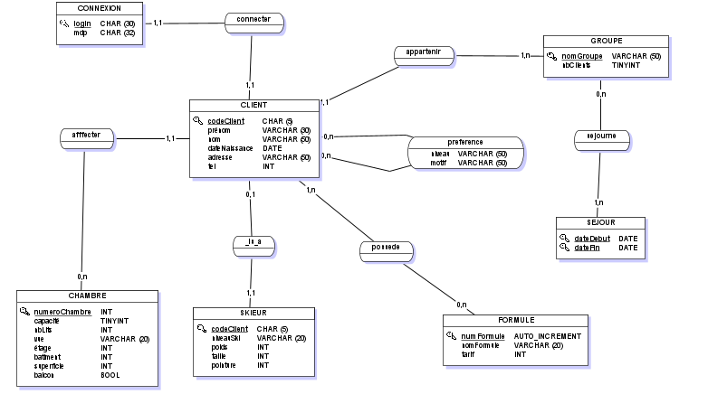
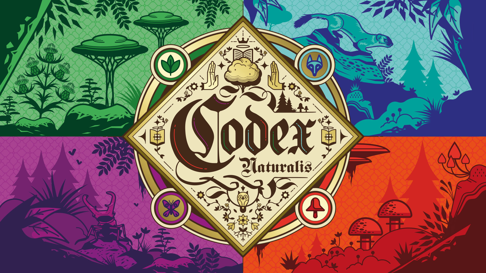
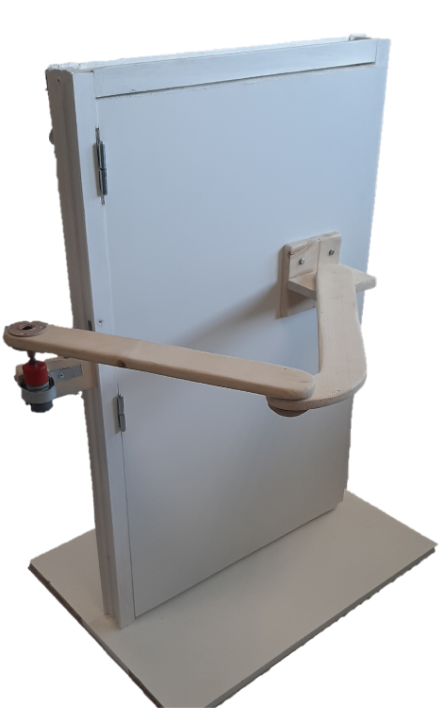
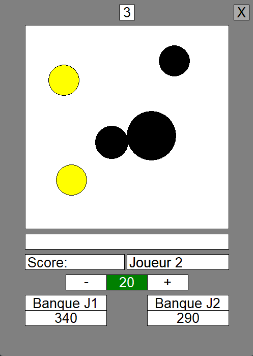
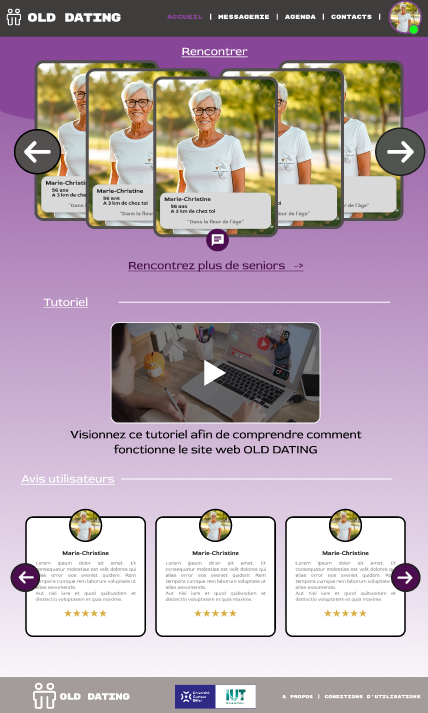
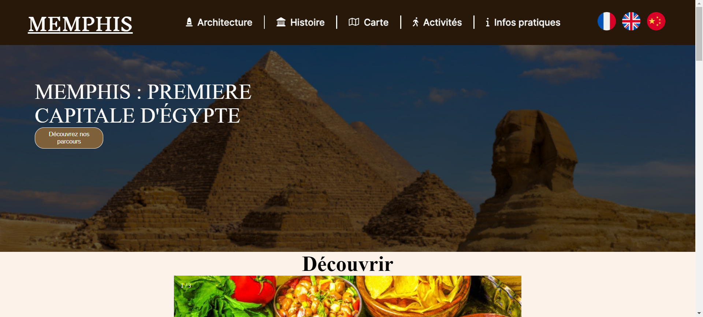

Mes Compétences






Passionné par l'informatique depuis toujours, j'ai découvert la programmation avec Scratch et j'ai tout de suite voulu me lancer dans ce domaine. Arrivé au lycée, je me suis tourné vers la filière technologique STI2D afin de prendre la spécialité Systèmes d'Information et Numérique (SIN). J'ai pu développer des bases en programmation (Python, C++ Arduino) à l'aide de projets, notamment en système embarqué. À la fin du lycée, je me suis dirigé vers un BUT informatique pour consolider mes bases, approfondir mes connaissances et découvrir le milieu professionnel de l'informatique grâce à l'alternance ou un stage prévu à partir de la deuxième année.



Réaliser la Base de données d'une station de sky.

Reproduire un jeu de société en java avec l'aide d'une bibliotèque graphique (zen5).

Adapter des portes et des lumières automatique pour une personne à mobilté réduite et réaliser une application mobile et un site web pour les contrôler.

Réalisation d'un jeu, le but est d'occupé plus de surface que son adversaire en posant des cercles. Plusieurs règles / fonctionnalités à implémenter.

Réaliser un site web de rencontre pour les personnes âgées à l'aide de PHP (Discussion, calendrier d'évenement, page admin, ...)

Réalisé un site web dynamique pour l'UNESCO sur la ville de Memphis et de sa nécropole.